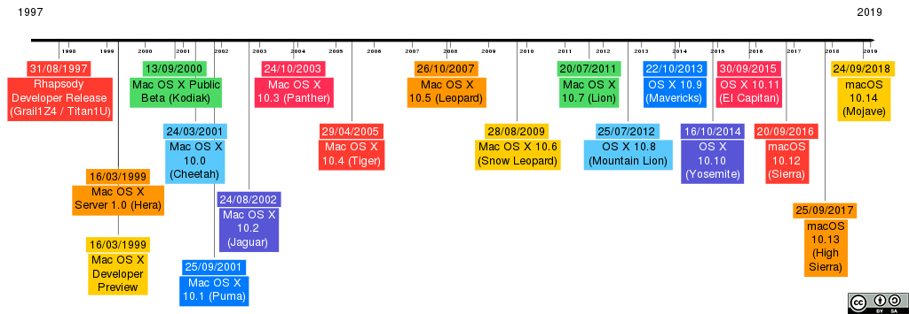

MacOS (prej "Mac OS X") je linija odprtih grafičnih sistemov, ki jih razvija, trži in prodaja Apple Inc. MacOS je naslednik prvotnega Mac OS X, ki je bil Applov primarni operacijski sistem od leta 1984.
Prva namizna različica, Mac OS X 10.0, je bila izdana marca 2001, prva posodobitev 10.1 pa je prispela kasneje istega leta. Po tem je Apple začel poimenovati svoje izdaje po velikih mačkah (Panther, Tiger, Leopard, Snow Leopard, Lion), ki so trajale do OS X 10.8 Mountain Lion.
Od OS X 10.9 Mavericks so izdaje dobile ime po lokacijah v Kaliforniji.
Med letoma 1999 in 2009 je Apple prodal ločeno serijo operacijskih sistemov z imenom Mac OS X Server. Začetna različica Mac OS X Server 1.0 je bila izdana leta 1999 z uporabniškim vmesnikom, podobnim Mac OS 8.5.
Po tem so bile predstavljene nove različice sočasno z namizno različico Mac OS X.
Od začetka Mac OS X 10.7 Lion so bile funkcije strežnika na voljo kot poseben paket v Mac App Store.
MacOS temelji na operacijskem sistemu Unix in na tehnologijah, razvitih med letoma 1985 in 1997 pri NeXT, podjetju, ki ga je soustanovitelj Apple, Steve Jobs ustvaril po odhodu iz Apple leta 1985.

Zgodovina različic macOS
Avtor: Tionran